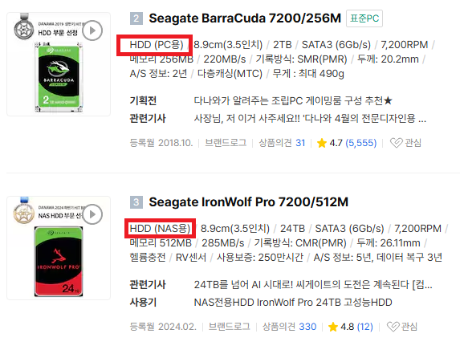

부품 고르는 법 - 부품 별 선택방법
하드디스크(HDD)
 하드디스크(HDD)는 대용량 저장 공간을 저렴한 가격에 제공하는 장점이 있어 많은 데이터를 경제적으로 저장할 수 있습니다. 또한 오랜 기간 사용된 검증된 기술로 안정성과 호환성이 뛰어나며, 데이터 복구가 가능한 경우도 많아 신뢰도가 높습니다. 비록 기계식 구조로 인해 SSD보다는 느린 편이지만, 실제로 사람들이 생각하는 것만큼 극단적으로 느리지는 않으며, 일반적인 문서 작업이나 동영상 재생 등 일상적인 사용에서는 충분한 성능을 제공합니다. 다만, 부팅 속도나 대용량 파일 처리, 게임 실행 등 고성능이 요구되는 작업에서는 SSD에 비해 차이가 크게 느껴질 수 있습니다. 또한 HDD는 소음과 진동이 발생하고 충격에 약해 물리적 손상 위험이 있으며, 발열과 전력 소모도 상대적으로 높습니다. 따라서 HDD는 속도보다는 대용량 저장과 비용 효율을 중시하는 경우에 적합합니다.
하드디스크(HDD)는 대용량 저장 공간을 저렴한 가격에 제공하는 장점이 있어 많은 데이터를 경제적으로 저장할 수 있습니다. 또한 오랜 기간 사용된 검증된 기술로 안정성과 호환성이 뛰어나며, 데이터 복구가 가능한 경우도 많아 신뢰도가 높습니다. 비록 기계식 구조로 인해 SSD보다는 느린 편이지만, 실제로 사람들이 생각하는 것만큼 극단적으로 느리지는 않으며, 일반적인 문서 작업이나 동영상 재생 등 일상적인 사용에서는 충분한 성능을 제공합니다. 다만, 부팅 속도나 대용량 파일 처리, 게임 실행 등 고성능이 요구되는 작업에서는 SSD에 비해 차이가 크게 느껴질 수 있습니다. 또한 HDD는 소음과 진동이 발생하고 충격에 약해 물리적 손상 위험이 있으며, 발열과 전력 소모도 상대적으로 높습니다. 따라서 HDD는 속도보다는 대용량 저장과 비용 효율을 중시하는 경우에 적합합니다.
하드디스크(HDD)는 사용 목적과 설계 방식에 따라 여러 종류로 나뉘며, 대표적으로 데스크탑용, NAS용, 서버용이 있습니다. 데스크탑용 HDD는 일반 개인 컴퓨터에 적합하며 상대적으로 저렴한 가격에 제공됩니다. NAS용 HDD는 24시간 연속 작동과 다중 드라이브 환경에 최적화되어 내구성과 안정성이 강화된 만큼, 데스크탑용보다 가격이 다소 높습니다. 서버용 HDD는 더욱 높은 신뢰성과 성능을 요구하는 환경을 위해 설계되어 가격이 가장 비싼 편입니다. 이처럼 HDD 종류별로 가격 차이가 존재하며, 사용 환경과 필요에 맞게 적절한 제품을 선택하는 것이 중요합니다.